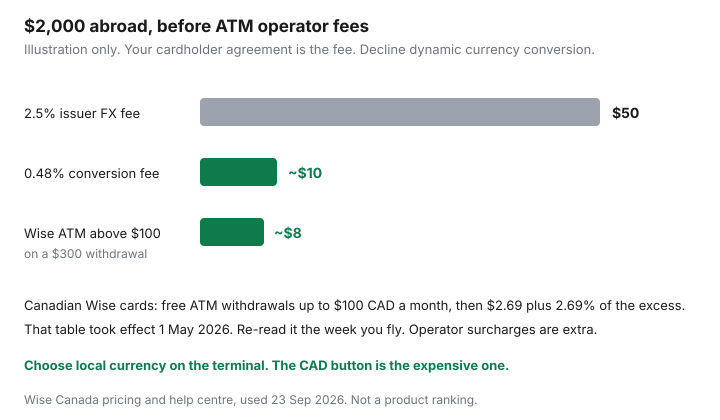

Travel · Canada
Travel Money from Canada: Cut FX Fees Without Getting Stuck Abroad
The fare was the part you argued about. The 2.5% on every tap, and the ATM that offered to charge you in Canadian dollars, was the part that left with the trip. It is a smaller argument and a cleaner save, because the fix is a setting and a second card, not a different vacation.
This is a Canada-origin playbook. Bank fees differ by card. Wise’s ATM allowance for Canadian-issued cards changed on 1 May 2026. Numbers below were read 23 Sep 2026. Check the week you leave. Nothing here is a ranking of travel cards.
Disclosure: Multi-currency cards and cards with no foreign-transaction fee are an offer type. Saving Optimizer may earn a commission if we later add partner links. We do not claim a Wise, bank, or card-network partnership, and we do not rank cards. Fee figures were read on 23 Sep 2026. Education only.
Key takeaways
- A common Canadian issuer foreign-transaction fee is about 2.5%. On $2,000 of spend that is about $50, before any ATM operator surcharge. Some cards charge more. Some charge none. Read the agreement.
- Mid-market tools such as Wise advertise conversion from about 0.48%, which varies by currency and how you pay. That is about $10 on the same $2,000, as an illustration.
- At an ATM or a terminal, choose local currency and decline dynamic currency conversion. The CAD button is the expensive rate.
- Carry enough cash for a day, not the trip. Do not buy the float at an airport exchange desk.
- Two cards, two networks, stored apart. A single card in a lost wallet is a frozen trip.
- Wise’s Canadian ATM table from 1 May 2026: free withdrawals up to $100 CAD a month, then $2.69 plus 2.69% of the amount over $100. Re-verify before you fly. Tell your bank you are travelling.
True cost of bank FX markups vs mid-market multi-currency cards
Most Canadian bank cards convert a foreign purchase at the network rate (Visa or Mastercard) and then add an issuer fee. A figure you will see often in cardholder agreements is 2.5%. It is not universal. Some premium and no-fee products charge 0%. Some debit and credit products charge more than 2.5% — public comparisons have cited figures such as 3% or 3.5% on particular products. Your agreement is the only number that spends your money. Look up “foreign currency conversion” or “foreign transaction fee” before you assume the card in the kitchen drawer is free.
On $2,000 of meals, taxis, and hotels, 2.5% is $50. A conversion fee that starts near 0.48%, which is how Wise describes the low end of its mid-market conversion charge, is about $10 on the same spend. The gap is about $40, before ATM operator fees and before dynamic currency conversion. The 0.48% figure moves with the currency pair and the payment method. It is a ceiling to beat, not a coupon.
| Method | What you might pay on $2,000 | What to verify |
|---|---|---|
| Issuer FX fee at 2.5% | about $50 | Your cardholder agreement. Zero-fee cards exist. So do higher fees. |
| Mid-market conversion from about 0.48% | about $10 | The provider’s fee for that currency, shown before you confirm. |
| Dynamic currency conversion | Often several percent, and easy to miss | The terminal’s “pay in CAD” offer. Decline it. |

A no-foreign-fee credit card is a type of product, not a brand we are picking. If you already hold one and you pay it in full, use it for taps and keep the mid-market card for cash. If you revolve a balance, the interest dwarfs a 2.5% fee. Pay the trip from money you have. Rewards on a revolving balance are not a travel strategy. The Scene+ and Aeroplan page says the same thing about points.
ATM strategy: local currency, decline dynamic currency conversion
Use an ATM in the destination, after you are in the city, for the cash you need. When the screen asks to convert, decline. Choose the local currency (pesos, euros, dollars of that country). The CAD amount the ATM prints is dynamic currency conversion: their rate, their markup, disclosed badly. The same prompt appears on restaurant terminals. “Pay in CAD” is the button that feels helpful and costs more.
Take fewer, slightly larger withdrawals rather than a daily small one, once you are past a free tier, because fixed fees repeat. Know the operator surcharge before you accept. It is usually on the screen. A “free” ATM in a tourist street can be the one with the fee. A bank-branded ATM is the duller, better default.
Debit pulls the money now and disputes are slower. Credit cards usually have a clearer dispute path for a bad hotel charge. Use credit for taps when the FX fee is acceptable or zero, and use the cash card for the ATM. Do not discover the daily ATM limit at a closed kiosk. Raise it, if your bank allows, before you leave.
How much cash to carry and where not to exchange (airports)
Carry enough cash for a day of transport, a market, and a tip that will not take a card. That is often a modest amount, not a stack from the currency exchange at the airport. Airport and hotel desks are where the spread is widest: they buy your Canadian dollars cheaply and sell local currency dearly. If you want a few notes for the arrival taxi, order a small amount from your bank a week ahead, or withdraw once at an ATM after baggage claim if the airport ATM lets you decline conversion. Do not convert the whole trip there.
Leaving Canada or returning with CAN$10,000 or more in cash or other monetary instruments (or the equivalent in other currencies) is a declaration to the CBSA, not a suggestion. The threshold is the total, not per person in a way that invites splitting to hide it. This page is not a way around that report. Most households on a holiday are nowhere near it. If you are moving a large sum, read the CBSA cross-border currency page before you fly.
On a resort week, cash needs are tips and the odd taxi. On a DIY week, cash needs are larger. Match the envelope to the trip you priced in the Mexico package comparison, not to a generic “bring $500” rule.
Backup card plan if one network is down
One card is a single point of failure. A network outage, a fraud freeze, a demagnetized stripe, or a wallet left in a taxi ends the payment method. Carry two cards on two networks if you can (one Visa, one Mastercard), and do not store them in the same pocket. One stays with the other adult, or in the room safe, with the number written down somewhere that is not the same bag — the international collect number from the back of the card, saved before you go.
A backup is not a second card you have never activated. Log into it at home. Confirm it works for a foreign charge or that the travel notice is set. A prepaid card with a small balance is a reasonable third rail if both bank cards are from issuers that freeze easily. Do not rely on a partner’s card as your only backup if you might be separated at a hospital. Medical costs abroad are the Insurance problem — provincial caps are not a policy — and the hospital will still want a card for the incidentals.
Wise and similar tools: fee schedules change—re-verify ATM free tiers before you fly
Wise’s own pricing page for Canada, read 23 Sep 2026, says you can withdraw up to $100 CAD per month per account without a Wise ATM fee, and that above that the charge is $2.69 plus 2.69% of the amount over $100. The help centre dates the structure to 1 May 2026. ATM operator fees are extra. Wise also says its cards cannot be used for local ATM withdrawals in Canada, which matters before you leave, not after. Conversion uses the mid-market rate plus the conversion fee you see before you confirm. Spending a balance you already hold in the local currency can avoid a second conversion. The fee is not 0.48% on every action. Read the quote in the app.
Worked ATM sketch, labelled: withdraw the equivalent of $300 CAD in one go. The first $100 is inside the free monthly allowance. The next $200 costs 2.69% ($5.38) plus $2.69, about $8, plus whatever the ATM owner adds. Two $150 withdrawals can cost the fixed $2.69 twice. A bank card at 2.5% on $300 is $7.50, plus that bank’s own ATM fee, which is often a flat amount on top. Neither is free. The error is withdrawing a little every day past the free tier, or accepting conversion on top.
Other multi-currency accounts change their free tiers too. The week you fly, open the fee page. A blog, including this one, is not the tariff.
Notify banks and set travel notices to avoid fraud freezes
Tell the bank, and the card issuer, where you are going and the dates. Many apps still have a travel-notice setting. Some issuers say they no longer need it and then freeze the first foreign tap anyway. Set the notice. If there is no button, use the secure message or the number on the card and keep a record. A freeze on a Friday night in another time zone is the expensive version of a fee.
Turn on transaction alerts so a copied card shows up as a text, not as a surprise at the statement. Save the issuer’s collect number while you still have Wi-Fi at home. Know the PIN. Chip-and-PIN is normal in a lot of countries, and a signature card that you have not used a PIN on will fail at an unattended terminal.
When you are back, look at the statement once. A 2.5% fee you did not expect, or a CAD-converted charge you thought you declined, is the lesson for the next trip. It is also a dispute if the merchant charged a currency you refused. The alert you set is what makes that review a ten-minute job instead of a month of “the trip was just expensive.”
Sources & date stamps
- Wise Canada pricing and the Wise help centre on ATM fees — Canadian cards: $100 CAD free ATM withdrawals per month, then $2.69 + 2.69% above that, structure dated 1 May 2026. Conversion “from 0.48%” is Wise’s published low end and varies. Used 23 Sep 2026.
- Card-network foreign-transaction fees — 2.5% is a common issuer add-on, not a law. Confirm the agreement. Used as an illustration 23 Sep 2026.
- CBSA cross-border currency reporting — declare currency and monetary instruments totalling CAN$10,000 or more when entering or leaving Canada. Confirm on the CBSA page if you are near the line.
- Global Affairs Canada, travel.gc.ca, travelling with money — official travel-money context. Used 23 Sep 2026.
Frequently asked questions
How much do Canadians lose on foreign transaction fees?
A 2.5% issuer fee is about $50 on $2,000 of spend, before ATM operator charges and before dynamic currency conversion. Your card may be 0% or higher than 2.5%. Read the agreement. A mid-market conversion fee near 0.48% is about $10 on the same $2,000, and that percent is not fixed for every currency.
Should I accept the ATM’s offer to charge me in Canadian dollars?
No. That is dynamic currency conversion. Choose local currency and let your card or multi-currency account do the conversion. The same answer applies to a restaurant terminal.
Is the Wise ATM allowance still $350 or two free withdrawals?
Not on the Canadian table read 23 Sep 2026. From 1 May 2026, Wise’s Canada pricing shows free ATM withdrawals up to $100 CAD a month per account, then $2.69 plus 2.69% of the excess. Operator fees are extra. Re-read the page the week you fly.
How much cash should I carry?
Enough for a day of taxis, a market, and tips that will not take a card. Not the whole trip, and not a stack bought at the airport exchange. Declare CAN$10,000 or more in currency or monetary instruments to the CBSA when you enter or leave Canada.
What if my card is declined abroad?
A second card on the other network, stored separately, is the plan. Set a travel notice before you go, save the collect number, and know the PIN. A freeze is a phone call, not a reason to use the airport exchange desk for the rest of the week.